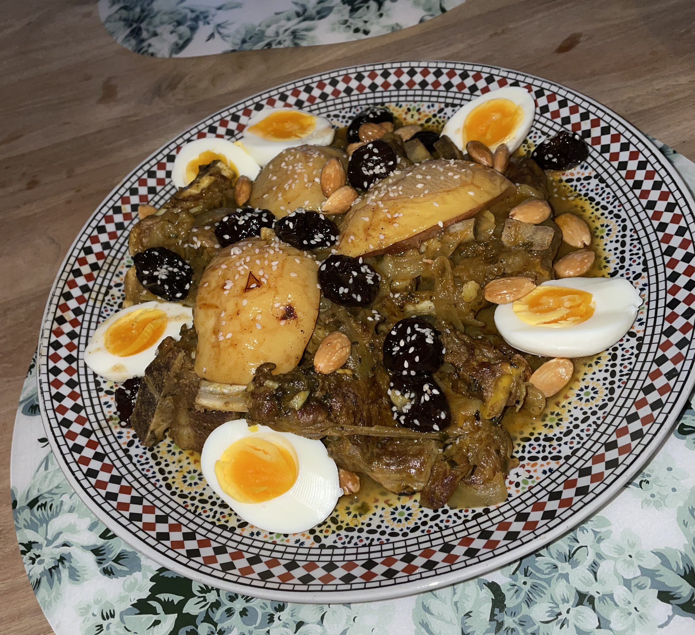

Tajine
Tajine met lamsvlees en abrikozen. Het gerecht is niet moeilijk te bereiden en is vrijwel simpel en toch heerlijk om op te eten.
Voor het vlees:
-
1 kg lamsvlees
-
2 fijngesneden uien
-
1 theelepel zout
-
20g verse koriander
-
halve eetlepel zwarte peper
-
250 ml water
-
1 eetlepel ras el hanout
-
125 ml zonnebloemolie
Voor de pruimen:
-
250 gram pruimen
-
150 ml water
-
2 eet lepels suiker
-
1 thee lepel kaneel
Voor de kweepeer:
-
2 kweeperen
-
suiker
-
kaneel
-
200 ml water
Bereidingswijze :
-
Leg de lamsvlees in een pan en voeg de gesneden ui, zout, koriander, zwarte peper en ras el hanout toe.
-
Laat dit even intrekken en voeg er dan de olie bij.
-
Zet het vuur op zijn hoogst voor een paar minuten.
-
Zet het de pan na een paar minuten op een middelhoog vuurtje voor 7 a 8 minuten.
-
Doe er gekookt water bij en zet het vuur zijn zachtst voor 1 a 1.5 uur.
-
Kook de pruimen met water, de suiker en de kaneel in een steelpannetje voor ongeveer 15 minuten op middelhoog vuur.
-
Kook tegelijkertijd de kweeperen in het water met de suiker en kaneel op een middelhoog vuurtje voor 15 minuten.
-
Kook tegelijkertijd ook het de eieren.
-
Haal het vlees uit de pan en leg het op een bord en doe de overgebleven jus eroverheen.
-
Leg de kweeperen en ei op het vlees.
-
Strooi de amandelen eroverheen.